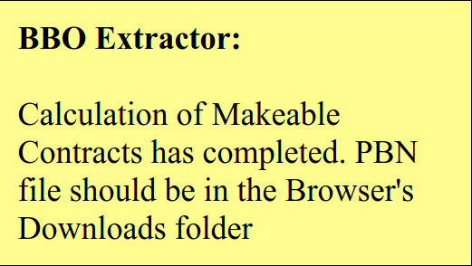
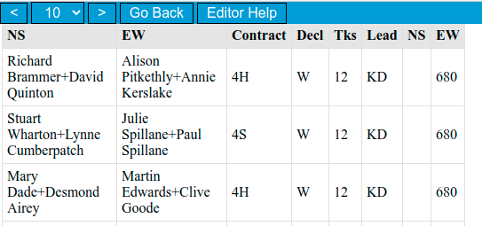

Scoring¶
CIN and other charity tournaments¶
The UMS code for CIN tournaments is 06 and for other charity events 03!
After the CIN event you need to send the xml file to
results@simpairs.com
The subject line should be “
e.g. *4136 England”
Prerequisites¶
The scoring process must be carried out in a Chrome browser or one of its derivatives (see Installing and configuring your browser), and they must be carried out in the order in which they appear below. (A list of urls and how to open them with one click can be found here).
(Note for Windows users: by default Windows does not display file extensions (e.g. .csv) in their file browser and this might cause confusion (and is in fact a security risk). To enable the display of file extensions see this document)
Preliminaries¶
Ensure that you have the latest version of the phoenix bbonames file on your computer. If robots are playing, ensure that you have a suitable entry in the names file (see The phoenix bbonames file).
NB If for any reason you do not intend to send a player’s results to the EBU, then temporarily change their EBU number in the phoenix bbonames file to 888888.
If you need to adjust scores this can be done in BBO before the BBO scores are published (within 15 minutes or so of the end of the tournament) (see Adjust a score). However, the simpler method is to do it during the scoring process before the BBO to XML converter (see the BBO to XML converter).
Any stage can be repeated if, for example, some names are missing from the phoenix_bbonames.txt file. No permanent damage can be done, so do not worry on that score. (Just remember that if a process is repeated the file in your Downloads directory will have a version number appended.)
Summary¶
When you are familiar with the process, this summary should suffice:
BBO to XML converter (uses <tournament name and date>.csv)
upload to Phoenix (uses <tournament name and date>.xml and <tournament name and date>.pbn)
upload to EBU (uses <tournament name and date>.xml)
Launch the browser and open the urls shown at Scoring web pages in different tabs (see Opening multiple urls).
Select tournament boards¶
Navigate to the club’s BBO Tournament list at:
http://webutil.bridgebase.com/v2/tarchive.php?m=h&h=vEBU211328&d=vEBU211328
You might have to login using the director’s login (vEBU211328) and password.
This will list the club’s tournaments (they stay here for one week only).

Click on The tournament number for the one that you are scoring (check the date).
It might indicate that the scores are not ready. We have no control over when BBO makes the files available, but usually the file are available within 20 minutes of the end of the tournament.
When the results are available you will see a page similar to:

Run BBO extractor¶
Click on the BBX icon in the browser (top right).
The BBO Running alert will appear:

This process generates a scorecard every few seconds and the screen will flash alarmingly for some seconds.
When it’s finished you will see a dialog box:

Click on OK and you will see the final dialog:
BBO to XML converter¶
Open the BBO to XML converter tab
(the converter can be downloaded here).

If any scores need adjustment, do it now!
a. Click on Review/Edit CSV in the top left of the form. You will be asked to select a file, and it should be the <tournament name and date>.csv file created in stage 7 above.

b. Click on Edit Scores.

c. Make the changes you need to, and click on Save CSV. You may the proceed as below.
Complete the fields as shown (except Master Points). Note that the Club ID number is the 6 character EBU number, and the UMS Charge Rate should be 10. Enter your name as the Contact. (The order of the fields on this page might vary - check)
Click on the Load Names button and open the bbo_names file that you have saved in your downloads directory (see these instructions). It will show a message: xx names loaded where xx is the number of names in the bbo_names file.
Click on Create XML file and select the relevant csv (<tournament name and date>.csv) file from the downloads folder. This process is more or less instantaneous,
This will create an XML file named <tournament name and date>.xml (this will be used in Sending scores to Bridgewebs and Sending P2P to EBU below).
Check that the file is in your Downloads directory, if not, re-run.
Upload to Phoenix¶
Open the Phoenix Bridgewebs tab (https://www.bridgewebs.com/cgi-bin/bwoq/bw.cgi?club=phoenix&pid=upload_results)
Enter the BridgeWebs password.

Here, you will be selecting files from from your Downloads directory.
Against Select the Results file, select <tournament name and date>.xml. (Look for the xml extension - in Windows you might have to turn on extensions).
Against Select the Deal File, select <tournament name and date>.pbn.
You can navigate around the scores and boards to satisfy yourself that the upload has worked correctly
Upload to EBU¶
Open the EBU website tab (https://www.ebu.co.uk/members/v2/
click on My EBU;
enter your personal EBU number and password;
you might need to click on Show all menus
click on the submit tab on the top-right. Use Browse to select the file:
<tournament name and date>.xml
from your Downloads directory;
click on Uploads;
you might get a request to resolve unknown players (for example if you have used substitutes). if you cannot find their details using the EBU search function, they can be recorded as guests.
Cleaning up redundant files¶
When you are satisfied that the results have all been uploaded, it might be as well to remove the work files from your Downloads directory. This is to avoid any confusion in future weeks because the file names will look similar. The files to remove are:
<tournament name and date>.pbn
<tournament name and date>.xml
<tournament name and date>.csv
And that is it for that tournament!
Adjust a score¶
NB Scores can also be adjusted at the scoring stage (see Scoring).
Access a user’s historical Boards¶
It might be useful to visit a board played by someone after the tournament is finished. This can be done using the BBO Hand Records feature
Go to the link below (You might have to log in to BBO):
https://www.bridgebase.com/myhands/index.php
You will see the following page:

Change the user name to the one that you want and the dates if outside the range shown in the defaults.
Click on Get hands

In the list of tournaments and hands, click on the Movie link to view the way that the hand was played, e.g. Board 5:

To create a link to the board:
click on the address bar arrowed in the diagram above (it will change onto a long string of characters)
copy and paste as necessary.